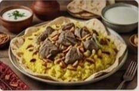
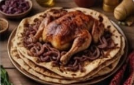
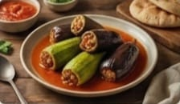
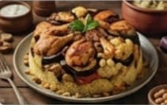
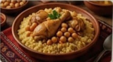
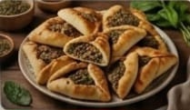

طوباس.. خيرات الأغوار وسلة فلسطين
"تتميز مائدة طوباس بمنتجاتها الزراعية الطازجة من الأغوار، وتشتهر بالأطباق الريفية الأصيلة التي تعتمد على المحاصيل الموسمية وزيت الزيتون البكر."

"المنسف" على طريقة طوباس
طبق المنسف الاحتفالي بلمسة طوباسية خاصة. أرز بالزعفران واللحم البلدي، يُقدم فوق خبز الشراك مع لبن الجميد المكثف.

مسخن طوباسي باللحم
أكلة فلسطينية تراثية أصيلة، تشتهر بها طوباس، تُحضر في المناسبات. خبز طابون مشبع بزيت زيتون بلدي، بصل مكرمل، ودجاج محمر بالسماق.

محاشي مشكلة
أطباق المحاشي من الأكلات المحبوبة في طوباس. تُحشى الكوسا والباذنجان بالخضار والأرز، وتُطهى في مرقة شهية.

مقلوبة الدجاج والباذنجان
الطبق العائلي الأشهر، يُقلب عند تقديم طبقات من الأرز والخضار المقلية والدجاج، مزين بالمكسرات. يُعد رمزاً للكرم.

"المفتول" بالدجاج
طبق شعبي تقليدي يُحضر من حبيبات القمح المفتولة يدوياً، تُطهى على البخار وتُقدم مع الدجاج المحمر ومرق اليقطين والحمص.

فطاير الجبنة والزعتر
معجنات شهية محشوة بحشوات متنوعة (جبنة بلدية، زعتر، سبانخ). تُعد وجبة خفيفة ومحبوبة، خاصة في أوقات التنزه ورحلات الطبيعة.